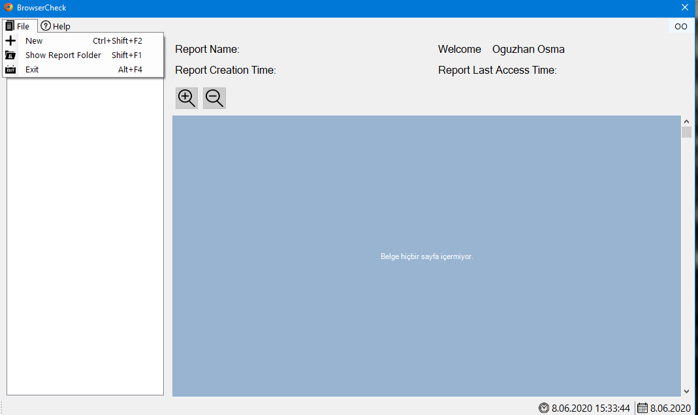
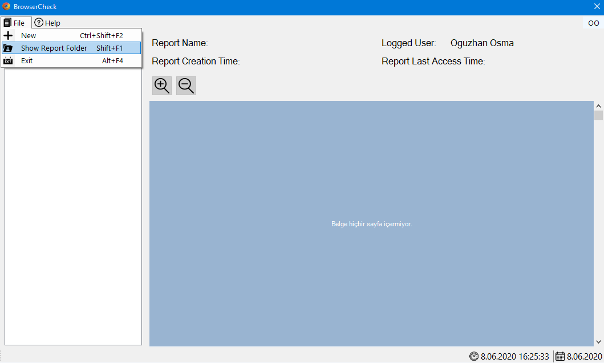

HOW TO USE BROWSERCHECK
1-New Case

File>New (Ctrl+Shift+F2)
2- Choosing Profile Directory and Related Browser

Note: You should choose the directory not db file.
Ex. : %APPDATA%/Mozilla/Firefox/Profiles/xxx/
3- Collecting Evidences and Creating Pdf Report


4- Checking URLs on Browser

When you click the “Browse” link, it’ll lead you to visited url before.
5- Viewing Recently Created Reports

First you must click refresh button to see newly created report.

Above the report you can see the creation date, name and last access time.
5- Showing Report on Explorer

Files>Show Report Folder(Shift+F1)